Pottery Pointer - A Mother's Day Gift
Status: Completed and undocumented
5/12/2026
This will be one of a long series of projects on here where I blabber about something I made with little to no documentation of the process of making it, with only my memories to explain anything...
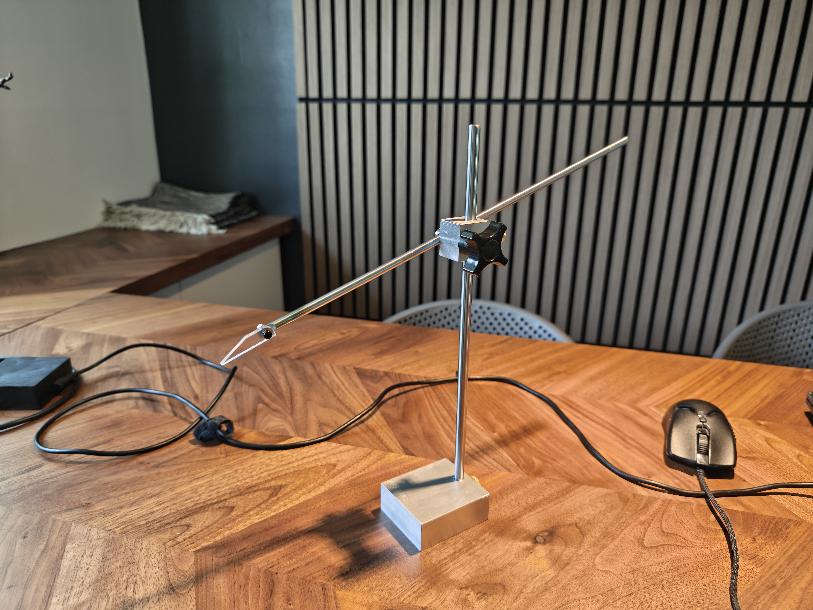
My mother is a ceramicist, and after listening to a year or two of grievance that her pots would all come out different heights, I remembered back to when I would watch the videos of Florian Gadsby, a phenomenal potter on YouTube, and how he always used a small pointer mounted to his pottery wheel to guide him in throwing. The design was quite simple - just a movable arm with a pointer that can be stowed out of the way when throwing and put back down to index the height of the pot, all mounted on a sturdy base. Thus, I set off to make something like this out of scraps around the shop.
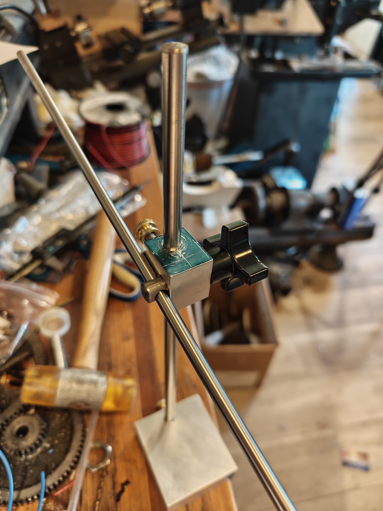
Again, I do not have many photos of the machining of this, so this will have to do. You can see the design I chose here- a simple setscrew retained block with a threaded coupler inside that, with the help of friction and a crosshole, holds down the arm to wherever it is tightened to. All of this is mounted on an aluminum base for stability, and a small knob from Ace hardware ties the whole thing together. This was less than a day of machining, but fixing the very broken mill before that took a lot longer setting me back another day :) Stuck bushings are hard to get out!
Lastly, I stamped some text and engraved a heart in the base for memories. I'd say it turned out pretty nice, and over the past few months it has had a TON of use in the studio! Take a look:
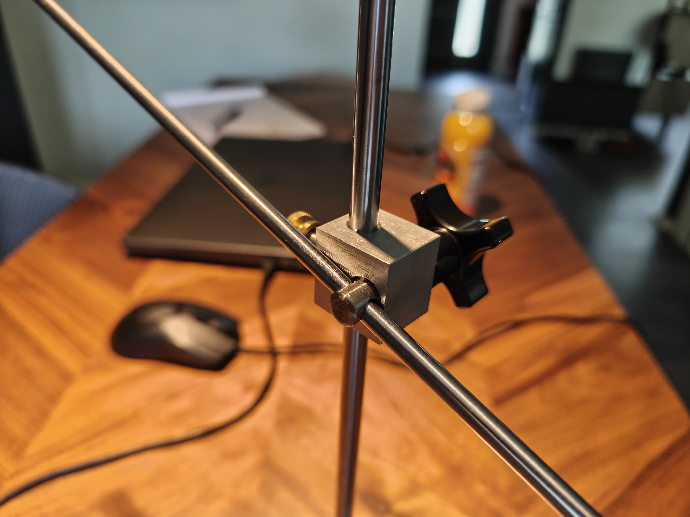
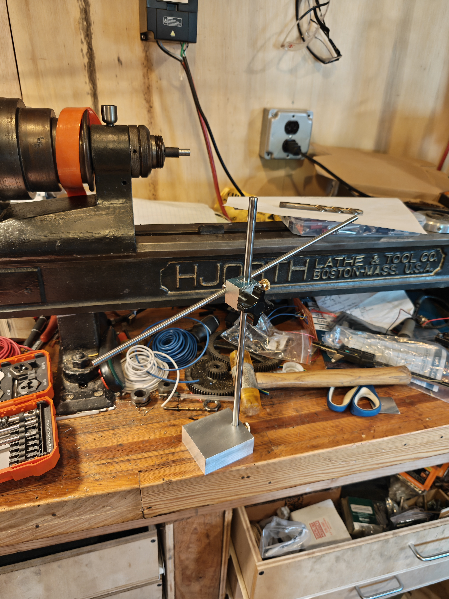
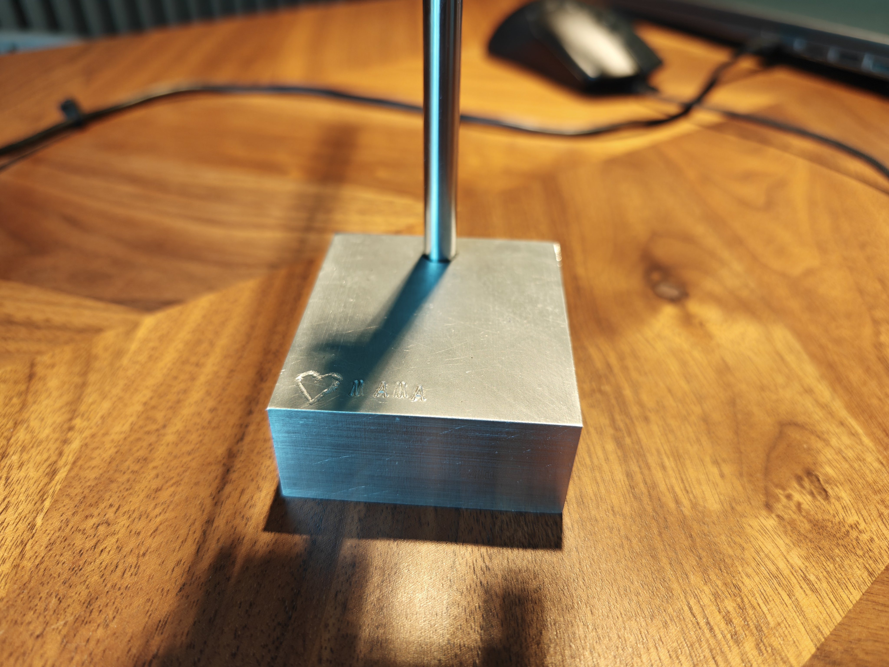
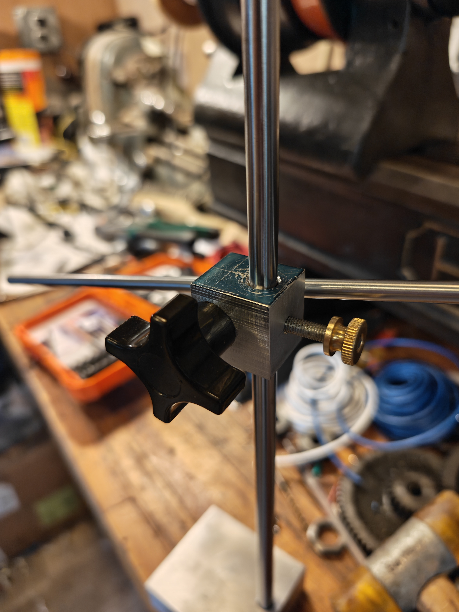
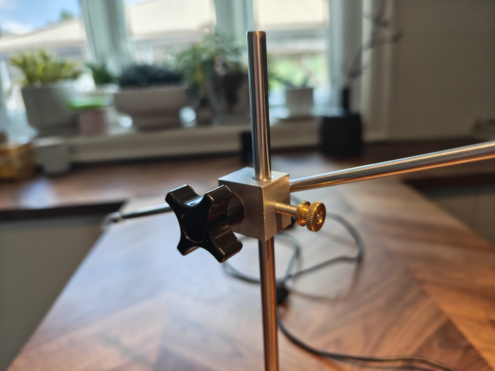
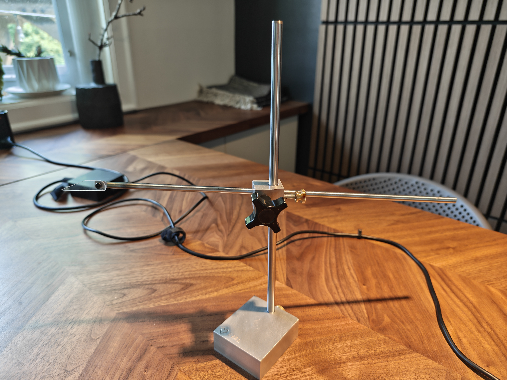
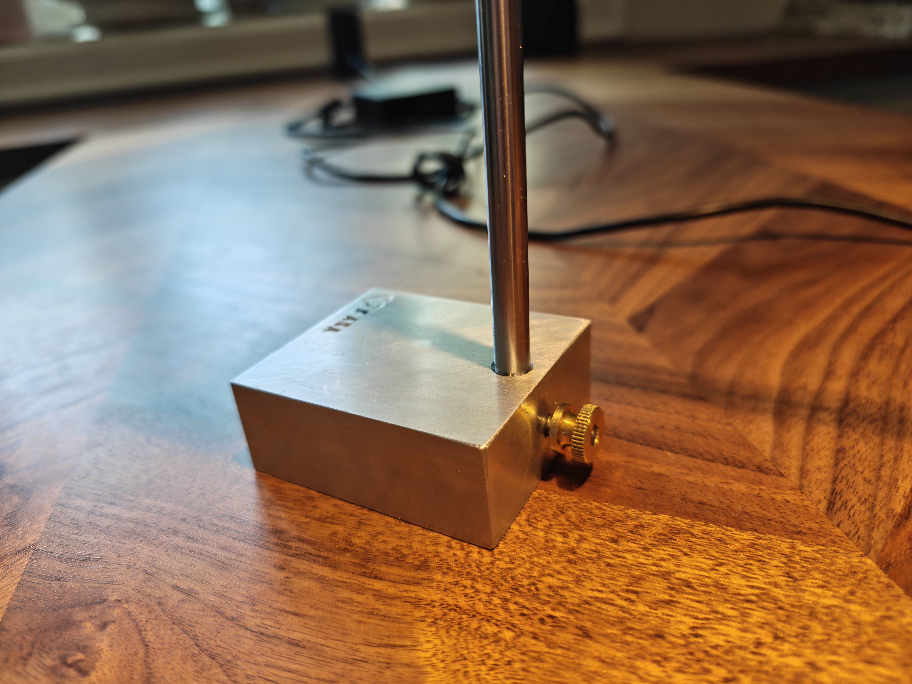
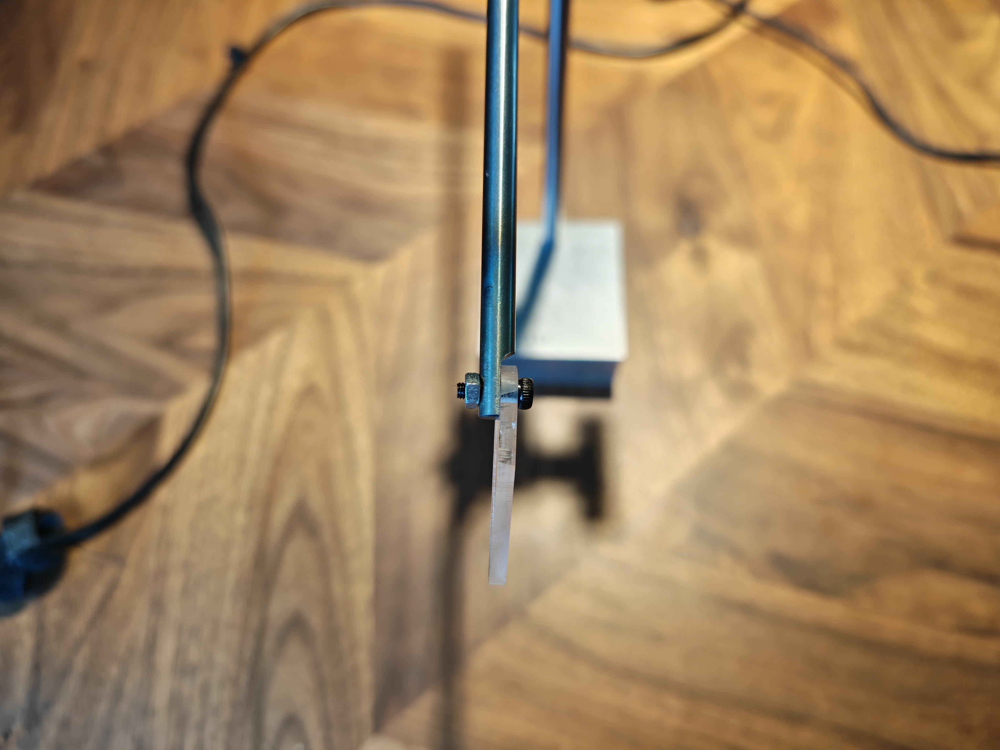
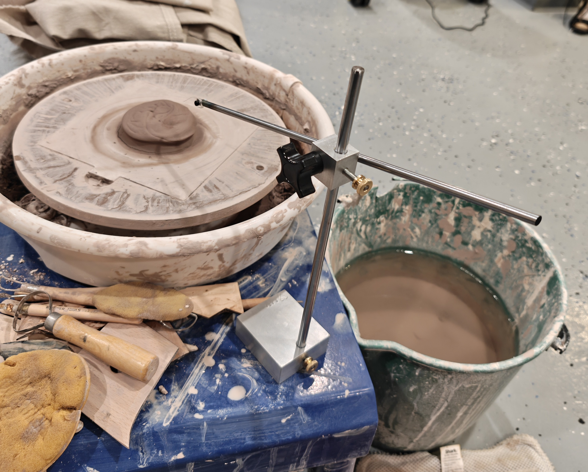